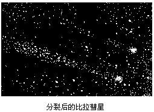

比拉彗星簡介 比拉彗星簡介

比拉彗星 (3D/Biela) 是一顆已消失的短週期彗星，它以一位奧地利業餘天文學家來命名。
1772年，法國天文學家梅西爾（Charles Messier）首度發現該彗星，到1826年2月，彗星通過近日點，由奧地利人比拉 (Wilhelm von Biela) 再度發現，並且計算出軌道及其公轉週期6.6年。這是第三顆有記錄的週期彗星。
1846年，該彗星被發現分裂為兩塊碎片，分別有各自的彗發和彗核。1852年雙雙返回，卻相差240萬千米，形狀和大小沒有太大變化，但是成為兩顆彗星，之後則再沒有發現蹤影。
1872年11月27日，在仙女座的位置上，出現了壯觀的流星雨，被認為是比拉彗星的殘骸。仙女座流星雨在19世紀每年仍可見到，但現在已變得微弱，幾乎不可見。
一顆編號為P/2001 J1 (NEAT)的週期彗星擁有與比拉彗星相似的軌道，被認為有可能是比拉彗星的殘骸之一。
比拉彗星雖然沒有哈雷彗星那樣大名鼎鼎，但是她也是一顆比較特殊的彗星。它是彗星中分裂最顯著、變化多端，被人稱為"神出鬼沒"的彗星。
比拉彗星是由奧地利業餘天文愛好者比拉（Wilheim Von Biela）在1826年發現而命名的一顆因自身分裂而走完生命旅程的短週期彗星。
運轉週期
曆元： 1852年9月29日 |
遠日點距離： 6.190 AU |
近日點距離： 0.8606 AU |
軌道半長徑： 3.5253 AU |
離心率： 0.7559 |
軌道週期： 6.619 a |
軌道傾角： 12.550° |
最後近日點經過日期： 1852年9月24日 |
|
|
|
比拉彗星的相關紀錄
接近年份 |
出現紀錄 |
1772年 |
法國天文學家梅西爾（Charles Messier）首度發現該彗星。 |
1826年2月 |
該彗星通過近日點，由奧地利人比拉 (Wilhelm von Biela) 再度發現，並且計算出軌道及其公轉週期6.6年。 |
1846年 |
該彗星被發現分裂為兩塊碎片，分別有各自的彗發和彗核。 |
1852年 |
仍可以找得到該彗星，之後則再也找不到其蹤影。 |
1872年11月27日 |
在仙女座的位置上，出現了壯觀的流星雨，被認為是比拉彗星的殘骸。 |
|